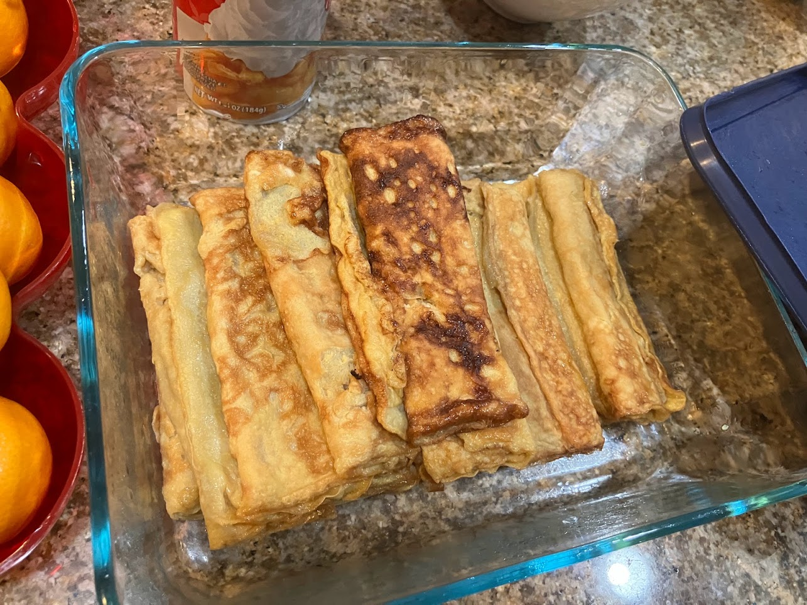

Reazy Peazies | Recipes by merp

Tamagoyaki
Tools & Ingredients
- 2 eggs
- 2 1/2 tsp sugar
- 2 tsp soy sauce
- A tamagoyaki pan (or a simple frying pan)
- Spatula
- Cooking oil
Instructions
- Crack the 2 eggs open into a bowl and beat them until the egg yolks are fully incorporated.
- Scoop 2 1/2 teaspoons of sugar and 2 teaspoons of sugar into the eggs and mix until the mixture looks sufficiently brown.
- Spray or coat the surface of the pan with oil. Heat the pan on medium heat. To check if it's hot enough, flick a droplet of water onto the pan and it should evaporate almost instantaneously.
- Once the pan is hot enough, pour a thin coat of the mixture onto the surface. I recommend using a measuring cup with a long spout, if you happen to have one.
- Cook until the bottom is solid and carefully roll up the egg on the pan. I usually end up rolling it as if I'm folding it in layers, but it's up you.
- Pour and cook until you've used up all the mixture.
- Enjoy!